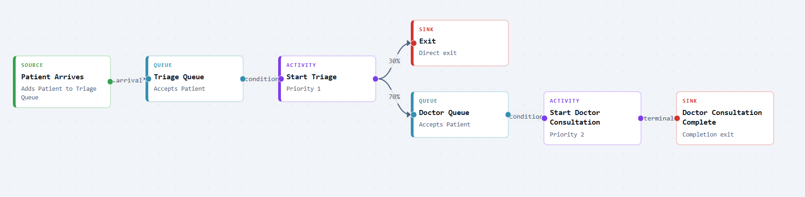
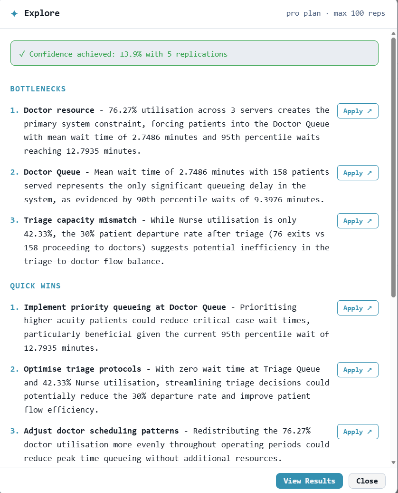
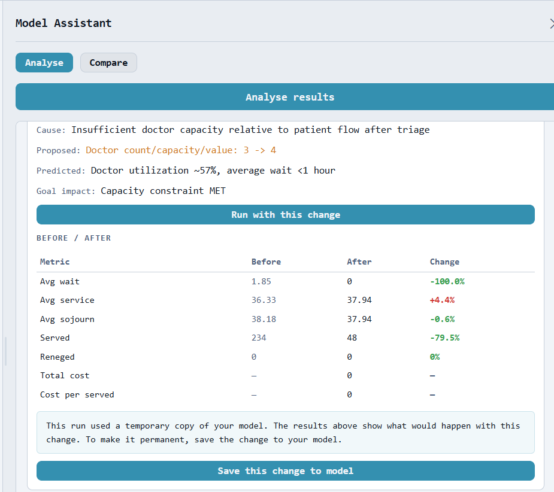

A server at 90% utilisation is not a slightly worse version of one at 50%. Waiting times accelerate, often dramatically, and simple intuition breaks down.
Discrete-event simulation in the browser
Understand your system before you commit to it.
Simmodlr is a free browser-based simulation studio for modelling queues, resources, and service processes. It is built for decisions that need more than back-of-envelope estimates and more honesty than a spreadsheet can give you.
No install · No licence barrier · DES helps build the model · Clear ranges around your results
Live model snapshot
Pathway model
Patient arrivalsAverage 12 per hour entering the system
Source
Triage splitHigh-acuity priority and low-acuity secondary routing
Route
Shared cliniciansThree resources serving both streams
Pool
Key outputs
High-acuity wait4.2 min
Low-acuity wait22.5 min
Utilisation85.8%
Replications30
DES insight
The priority mechanism protects urgent patients but pushes substantial delay onto the low-acuity stream. Model dedicated low-acuity capacity before committing to the current staffing pattern.
Easy to startNo software to install and no heavy setup before you can begin.
More than averagesSee a sensible range around your results, not just one neat number.
DES-assistedDescribe your system in plain English and let DES build a starting model for you.
Free to startAccessible enough for learners, strong enough for serious analysis.
Why simulation
Spreadsheets lie about queues.
Queueing formulas assume neat averages and steady-state behaviour. Real systems are messier than that. Variability compounds, routing creates unequal experiences, and shared resources produce knock-on effects that a spreadsheet simply cannot reveal.
Service times with the same mean can create very different queue behaviour. Averages hide uncertainty. Simulation exposes it.
Priority rules, shared staff, blocking, and starvation produce effects that only emerge when you model the system event by event.
Formula vs simulation
Mean waiting time by utilisation3.5m
50%
6.5m
65%
13m
80%
41m
90%
190m
95%
How it works
Build, run, interpret. In one place.
The product story works best when it feels simple and direct. Define the system, try it out, then understand what the results are telling you.
01
Build the model
Use simple editors, a visual canvas, or plain-English prompts and let DES build a starting model for you.
02
Run serious experiments
Try one run or repeat it several times so you can see a steadier picture of how the system behaves.
03
Interpret the results
Turn outputs into decisions with clear result ranges, simple comparisons, and DES reading your results in plain language.
Worked example
A&E triage, modelled in 20 minutes.
A proposal-style walkthrough for a real operational decision: expose the split in patient experience, rank the fixes, and show the before/after case quickly enough for a stakeholder conversation.
Scenario
An emergency department receives patients at an average rate of 12 per hour. High-acuity patients (30%) go directly to a priority queue; low-acuity patients (70%) route to a secondary queue. With 3 clinicians shared across both queues the department runs near 87% utilisation, but aggregate statistics hide a critical split in patient experience.
After repeated runs with the early settling period removed, the simulation reveals what the formula cannot: a severe bottleneck at the doctor resource, an AI that reads the results and ranks every fix, and a before/after comparison that makes the case for change in seconds.

01 Build
Map the priority pathway
Patient arrivals split into high-acuity priority care and low-acuity secondary routing, with shared clinician capacity modelled explicitly.

02 Diagnose
Let AI rank the fixes
The assistant reads the replications, flags the doctor resource as the constraint, and separates quick wins from higher-investment options.

03 Prove
Show before and after
Compare the current pathway against the proposed change so the impact is visible before staffing or routing decisions are made.
High-acuity mean wait4.2 min
Low-acuity mean wait22.5 min
Clinician utilisation85.8%
DES insight
The priority rule protects urgent patients but transfers delay to the low-acuity stream. Explore dedicated low-acuity capacity, doctor uplift, or redesigned routing before committing to the current staffing pattern.
Decision moments
For people facing real trade-offs.
I would frame the audience less as personas and more as situations where someone needs a defensible answer: before spending money, before changing staffing, while diagnosing operational pain, or while learning the discipline properly.
Test the decision before the spend and understand how much improvement you actually buy.
See how service levels and queue experiences shift when resources are shared differently.
Find the structural bottleneck rather than guessing from surface symptoms alone.
Use a simple browser-based tool that stays accessible without hiding what is going on.
Get started
Try the model before you trust the estimate.
No install, no long setup, and no need to start with code. Open the browser, describe the system, and get to a defensible answer faster.